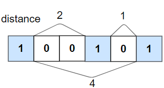

1. Check If All 1's Are at Least Length K Places Away
Given an array nums of 0s and 1s and an integer k, return True if all 1's are at least k places away from each other, otherwise return False.
Input :
First Line contains t which represents number of testcases. For each testcase there are two lines,first contains n,k which represents size of the array and maximum distance respectively and the second line contains n integers.
Output :
For each testcase print 1 if all 1 are atleast k distance away from each other else print 0.
Example 1:

Input: nums = [1,0,0,0,1,0,0,1], k = 2
Output: true
Explanation: Each of the 1s are at least 2 places away from each other.
Example 2:

Input: nums = [1,0,0,1,0,1], k = 2
Output: false
Explanation: The second 1 and third 1 are only one apart from each other.
Example 3:
Input: nums = [1,1,1,1,1], k = 0
Output: true
Example 4:
Input: nums = [0,1,0,1], k = 1
Output: true
Constraints:
1<= t <= 100
1 <= nums.length <= 10^5
0 <= k <= nums.length
nums[i] is 0 or 1